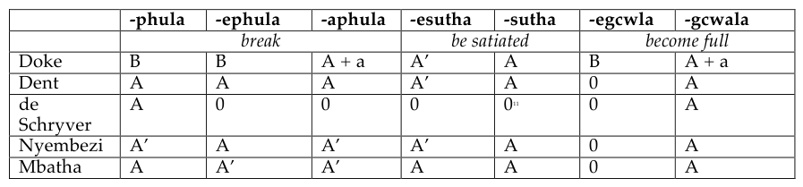
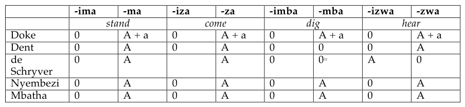

RAIL 2022Tafsiri ya mashine
Jinsi ya kushughulikia yale yanayoitwa "vitenzi vya irabu vyenye maumbo mbadala yasiyo ya irabu" katika kamusi ya lugha mbili ya Kizulu? Hoja ya mkabala wa kipragmatiki.
Tafsiri ya mashine, haijakaguliwa na binadamu. Makala asili ndiyo toleo la rejeo; sentensi zilizopigiwa mstari ni zile ambazo ukaguzi wa kiotomatiki haukuwa na uhakika nazo.
Proceedings of the 3rd Workshop on Resources for African Indigenous Languages (RAIL 2022), Journal of the Digital Humanities Association of Southern Africa.
Tafsiri ya Ernst van Gassen (Arktos AI Lab), yenye leseni CC BY-SA 4.0 kama makala asili. Matumizi tena yanaruhusiwa kwa kutaja mwandishi; shiriki marekebisho kwa masharti yale yale. Waandishi asili hawajakagua wala kuidhinisha tafsiri hii.
Maandishi matupu ya kutumia tena, pamoja na leseni yake: Kiswahili · LESENI
Taasisi
Michel Lafon1
research fellow (retired)
CNRS Llacan Paris, IFAS - Johannesburg
& CenterPoL, University of Pretoria
& Bolofo Mongezi
PhD Candidate, Wits School of Education
Anwani za barua pepe zimeondolewa kwa sababu za faragha. Zinapatikana katika PDF asilia.
Muhtasari
Ingawa ulematishaji katika Kizulu (na lugha jamaa) hadi leo bado ni suala ambalo halijatatuliwa kikamilifu, huku kamusi, za lugha mbili na za lugha moja, zikichukua mikakati tofauti kuhusu nomino, tunataka kukazia hapa kipengele kidogo cha suala hili: jinsi ya kulematisha vitenzi vyenye irabu za mwanzo za hiari. Kwa kuwa tofauti hiyo hutokea mwanzoni, ni muhimu kwamba ipate ushughulikiaji sahihi wa kamusi, isije ikampotosha mtumiaji au kumpa taarifa potofu.
Maneno Muhimu
isiZulu - leksikografia - vitenzi vya irabu
Tutaanza kwa kuwasilisha vitenzi vyenye irabu za mwanzo za hiari katika Kizulu, tukilinganisha mikakati ya ulematishaji inayotolewa na kamusi kuu zilizopo, ambazo baadhi yake kwa mtazamo wetu hazina uthabiti. Kisha tutatambulisha suluhisho la kipragmatiki tulilolichukua katika kamusi yetu ya pande mbili ya Kifaransa kwenda Kizulu na Kizulu kwenda Kifaransa, ambalo tunadai kwamba linaipa lugha haki zaidi.
1 Korasi
Kizulu (au isiZulu) 2 ni kwa mujibu wa demografia lugha kuu ya Kiafrika (Kibantu) inayozungumzwa Afrika Kusini, 3 ikiwa katika masosiolekti yake tofauti ni lugha ya kwanza au ya nyumbani ya karibu watu milioni 13, yaani, 22% ya idadi ya watu ya angalau milioni 59. 4 Ingawa kuna idadi ya lahaja za kikanda au za chini ya kikanda, aina yake ya kawaida, inayofundishwa katika shule na kusambazwa kupitia hali rasmi, ikiwa ni pamoja na fasihi, magazeti yaliyoandikwa na yaliyosemwa, pamoja na sherehe rasmi, inakubalika sana. Pia inajivunia tahajia inayokubalika vyema. Makala haya yanategemea lugha sanifu na data zetu zimechukuliwa hasa kutoka vyanzo vya pili, yaani, kamusi kama zilivyonukuliwa katika makala, zikikamilishwa na uchunguzi nasibu kutoka nyaraka rasmi na zisizo rasmi za maandishi pamoja na mazungumzo yasiyo rasmi, na ufasaha wa mzungumzaji asilia wa mwandishi-mwenza mmoja.
Kizulu kina orodha kubwa kiasi ya kile (Clement Martyn Doke 1992, 131) anachokiita "vitenzi vya irabu vyenye maumbo mbadala yasiyo ya irabu", kama vile
- -edlula au -dlula, 5 pita 6
- -esutha au -sutha, shiba kwa chakula
Irabu ya mwanzo mara nyingi ni /e/, lakini /a/ na /o/ pia hutokea, mara nyingi zaidi kama vibadala zaidi (mifano kutoka kamusi):
- -ehlula, -ahlula au -hlula, shinda, angamiza
- -ejwayela, -ojwayela au
- ⎯jwayela, kuwa na mazoea ya
-ephula, -aphula, -ophula, au ⎯phula, vunja
Ingawa uwepo wa miundo mbadala katika kiwango unaweza kutokana na kujumuishwa kwa sifa za kieneo kwani, ingawa kimsingi unategemea « Lahaja ya Kati ya Kizulu » (Kubeka 1979, 83), unajumuisha kwa ubishi sifa za aina nyingine, inaonekana kwamba tofauti hiyo sasa imekuwa ya kimabadiliko, kwani baadhi ya vitenzi vya Doke vyenye irabu ya mwanzo havionekani kuwa halali leo (lakini tazama zaidi chini):
- ?-efunda kwa -funda soma ? -egcwala kwa -gcwala, jaa ? -emithi kwa -mithi kuwa na wadogo (wanyama); kuwa mjamzito ? -ojwayela kwa -jwayela, kuwa na mazoea ya
Hili lingeelekeza kwenye hali ya mmomonyoko wa vokali. Hata hivyo ukweli kwamba baadhi ya vitenzi hivyo, kama -gcwala, vinaonekana kuwa na chanzo chake katika ideofoni (gcwa, ya kujaa tele) ambazo huanza kwa konsonanti unapendekeza kwamba maelezo haya hayatoshi. Vokali ingekuwa imeongezwa hapo (au ideofoni ingekuwa imepatikana kwa kufutwa kwa vokali). Hatutachunguza suala hili zaidi hata hivyo, kwani halihusiani na tatizo lililopo.
Nomino zinazotokana na mzizi huo huo zinaonyesha mbadala uleule :
abalusi au abelusi, wachungaji (ling. ⎯elusa au -lusa, chunga) lakini si uwezekano wote unakubaliwa kila wakati:
umelaphi 7 mganga : ? umlaphi,
Tofauti hiyohiyo inaweza kutumika kwa vitenzi vilivyoongezwa na nomino zinazotokana navyo:
- -ehluleka au -ahluleka, kushindwa na isehluleki au isahluleki kushindwa -efundisa au -fundisa kufundisha, na abafundisi au abefundisi, makasisi -efundisa inaonekana wazi kuwa imepitwa na wakati lakini nomino abefundisi imethibitishwa
Pia hutokea kwamba kibadala ∂ hakijumuishi maana zote za kibadala ß, ikidokeza kwamba vitenzi awali vilikuwa tofauti lakini vikachanganyika kutokana na upotevu wa kifonetiki wa irabu ya mwanzo:
-phuza sasa ina maana mbili: -phuza, kunywa na -phuza (kibadala cha -ephuza) kuchelewa
Kwenye kategoria hii tunaongeza vitenzi vitatu (au vinne) vyenye /i/ kama irabu ya mwanzo, ambavyo Doke katika kifungu kilichonukuliwa hapo juu anavitaja kama "vitenzi vya irabu fiche" kutokana na ukweli kwamba /i/ inaweza kuonekana tu katika maumbo yaliyonyambulishwa inapotanguliwa na irabu /a/ ambayo nayo kisha huungana nayo na kusababisha /e/: 8
- -(i)ma: simama: ngiyema au ngiyama, ninasimama
- -(i)-za, njoo: bayeza au bayaza, wanakuja
- -(i)zwa, elewa: ubezwa au ubazwa, wasikilize
Kwa kuwa katika Kizulu /i/ huelekea kutoweka inapofuata irabu yoyote isipokuwa /a/ (au kuungana ikiwa irabu inayotangulia ni /i/), hakuna hitimisho linaloweza kutolewa kutokana na matukio ambapo /i/ ya mwanzo haionekani, kuhusu kibadala cha shina la kitenzi ni kipi katika tukio lolote:
ngimile, nilisimama: |ngi|-|im|-|ile| au |ngi|-|m|-|ile| uzwile, ulisikia: |u|-|izw|-|ile| au |u|-|zw|-|ile|
Kwa hiyo tunapendekeza kwa vitenzi hivyo umbo lahaja la shina lenye irabu ya mwanzo, sawa na hali iliyo hapo juu:
- -ima au -ma, kusimama
- -iza au -za, njoo
- -izwa au -zwa, kusikia, kuelewa
Uchaguzi wa lahaja unaonekana kuhusiana na umbo la wakati, uwepo wa kiambishi tamati baada ya mzizi ambao unaonekana kusababisha upendeleo kwa umbo fupi linaloanza kwa konsonanti, na pia na shina lenyewe. Mifano ifuatayo imetokana na uchunguzi wetu wenyewe wa usemi usioombwa:
ngiyezwa badala ya ngiyazwa, nasikia ngiyazwisisa badala ya ngiyezwisisa, naelewa kwa uwazi kabisa kuyezwakala au kuyazwakala, inaeleweka ngiyeza badala ya ngiyaza, ninakuja ngiyabazisa endlini badala ya ngiyabezisa endlini, ninawafanya waje nyumbani ngiyema au ngiyama, ninasimama ngiyamela abafazi badala ya ngiyemela abafazi, ninawangojea wanawake
2 Ushughulikiaji katika Kamusi
Mambo haya yanashughulikiwaje katika kamusi kuu za Kizulu?
Tukishikilia vitu vilivyotajwa tayari, tunalinganisha kamusi kuu zinazopatikana kwa sasa: 9 za lugha mbili - Doke & al. Kizulu-Kiingereza na Kiingereza-Kizulu (Clement M. Doke et al. 1999), Scholar's Zulu ya Dent na Nyembezi (Dent na Nyembezi 1995), ya de Schryver (de Schryver 2015)- na za lugha moja - ya Nyembezi (Nyembezi 1992) na ya Mbatha (Mbatha 2006). Tunafahamu kwamba kamusi hizi hazikuandaliwa ndani ya mfumo mmoja. Ingawa nne za zamani zinafuata, kwa kupotoka kidogo kati yao, mkakati uliowekwa na Doke kwa leksikografia ya Kizulu, ambao hulematisha mashina badala ya maneno, ya de Schryver, mbali na kuwa msingi wa korasi, inaleta mkabala unaolenga kulematisha maneno badala ya mashina (de Schryver na Wilkes 2008). Hata hivyo, mapinduzi haya katika ulematishaji wa Kizulu hayaathiri kweli vitenzi. Ingawa Doke na Nyembezi wananukuu vitenzi chini ya amri huku kamusi nyingine zikirejelea shina la kitenzi, lililofafanuliwa ipasavyo katika (Marlo 2013) kama "mzizi wa lazima, kiambishi tamati kimoja au zaidi cha kinyambulizi kinachoweza kutokea [pia kinachojulikana kama viendelezi] 10 na kiambishi tamati cha mwisho cha unyambulishaji kinachojulikana kwa kawaida kama "Irabu ya Mwisho", umbo hilo linafanana kisegmenti, amri ya umoja ikiwa si kingine chochote katika Kizulu isipokuwa shina hilo lenye muundo maalum wa toni.
Tunatumia alama zifuatazo:
A : main entry (as revealed by length of description);
A': ingizo kuu ingawa fupi kuliko A [hilo linamaanisha kuna maingizo makuu mawili katika kamusi moja]
A + a : ingizo kuu + rejea mtambuka kwa angalau kibadala kimoja;
B : ingizo lililofupishwa, lenye rejea mtambuka kwa ingizo kuu;
B' : rejea mtambuka kwa ingizo kuu;
0 : hakuna kutajwa kwa kipengele



3 Uchunguzi
Inaonekana, hata kwa kuhukumu kutokana na sampuli finyu na ya kubahatisha hivyo, kwamba kutopatana kunatawala ndani ya kamusi na vilevile kati ya kamusi, kama mtazamo wa haraka wa jedwali unavyodokeza.
- Kizulu hadi Kiingereza.
Kwa kuwa Doke anarejelea hasa "vitenzi vya irabu vyenye maumbo mbadala yasiyo ya irabu" mtu angetarajia vitenzi hivi kuingizwa kwa utaratibu chini ya irabu kukiwa na ishara kwamba umbo mbadala linaloanza kwa konsonanti lipo: sivyo ilivyo lakini matukio mengi yanajumuisha rejeleo mtambuka, jambo linalopunguza suala hilo. Kwa upande mwingine katika Dent urudiaji ni wa mara kwa mara: -ephula, -aphula na -phula miongoni mwa mifano mingine kama hiyo hujumuisha viingizo vitatu tofauti vyenye fasili karibu zilezile zilizorudiwa bila rejeleo mtambuka lolote. De Schryver ni thabiti zaidi katika kutoa rejeleo mtambuka la umbo linalodhaniwa kuwa si la kawaida kwa umbo kuu.
Kuhusu yale yanayoitwa irabu fiche au vitenzi vinavyoanza kwa i, Doke ndiye pekee anayetaja kwa utaratibu "i fiche" katika maelezo ya viingizo vyote vinavyolingana. Dent na de Schryver hawatoi dokezo dhahiri kwalo ingawa wanalidokeza kupitia mifano: chini ya -zwa, Dent anatoa ukungezwa nakutshelwa, kutaka kujionea mwenyewe ("kutotaka kuambiwa"), ambapo kiashiria cha ukanushi -nga-hubadilika kuwa nge kwani irabu yake /a/ inaungana na /i/ ya mwanzo; 1415. Kwa namna sawa, chini ya -za de Schryver anatoa abantu beza ngobuningi, watu walikuja kwa wingi wao, ilhali beza haiwezi kupatikana kutoka kiambishi awali cha kiima ba- na kitenzi kilichotolewa kama -za. Hali sawa chini ya zwakala (kiingizo tofauti kutoka -zwa) na kuyezwakala inaeleweka. 16
- Kiingereza kwenda Kizulu
Katika kamusi zote tatu za lugha mbili, ni umbo linalotolewa kama kidahizo kikuu katika Kizulu kwenda Kiingereza pekee ndilo linaloonyeshwa, bila kutajwa kabisa kwa vibadala. Hilo linatumika miongoni mwa mengine kwa Dent ambapo, chini ya break, ni -aphula pekee ndiyo imeorodheshwa.
- Kizulu cha lugha moja
Nyembezi na Mbatha wanatoa maelezo yanayokaribia kufanana kwa kila kibadala, kila kimoja kikichukuliwa kama kidahizo kikuu (tazama -dlula, -edlula miongoni mwa mengine), mara kwa mara wakionyesha kuwepo kwa kibadala kilichoingizwa kwenye kisawe kama ilivyo katika mfululizo wa -hlula na -phula. Hata kama vibadala kwa namna fulani ni visawe, ingekuwa na maana katika kazi ya kiisimu kubainisha. Na hilo halizuii kutopatana: mojawapo ya mifano ya Mbatha chini ya dlula ni ukwedlula ngendlu yakhiwa kutotoa msaada kwa watu wanaofanya kazi, ambayo inapaswa kuonekana chini ya -edlula. Vivyo hivyo kwa uwephulile umoya wami lo mfana, mvulana huyu alivunja moyo wangu, ambayo inapaswa kuelezea ephula badala ya -phula. Kuhusu "vokali fiche", hakuna kutajwa kwa wazi kabisa. Hata hivyo Mbatha anajumuisha katika mifano yake maumbo yaliyonyambulishwa ambapo "i fiche" inaonekana: chini ya -za: (…) uyeza, (…) unakuja; chini ya -zwa: (…) sengathi akezwa (…) kana kwamba haelewi; ukungezwa ngokutshelwa (tazama hapo juu na dokezo 14).
4 Mtazamo wa kipragmatiki
Kamusi yetu ya Kifaransa / Kizulu ya pande mbili (Lafon na Mongezi 2022) haina dhamira ya kuwa ya kina, bali ni msaada rahisi wakati mtu anashiriki katika mazungumzo. Nafasi na gharama zilikuwa shida kubwa. Bado tulilenga kufunika msamiati mwingi iwezekanavyo huku tukijaribu kubaki thabiti kote.
Katika sehemu ya Kifaransa kwenda Kizulu, tulichagua kuweka irabu inayowezekana ndani ya mabano, ili kutoa kiwango cha juu cha habari katika nafasi ndogo, tukishughulikia vitenzi vinavyoanza na i kwa namna sawa:
passer (to pass): -(e)dlula; aller (to come): -(i)za
Kwa hivyo vibadala vyote vya maumbo yaliyonyambulishwa vinaweza kutolewa kutoka kwa lemma kama zilivyo.
Ni wazi kwamba mkakati huo huo haungeweza kufuatwa katika sehemu ya Kizulu kwenda Kifaransa. Ili kuepuka marudio na pia kuachwa kwa maumbo, tuliamua kulematisha umbo ambalo lilionekana kwetu kuwa la kawaida zaidi (kwa kuzingatia hisia za mzungumzaji asilia), umbo lingine au pengine maumbo mengine yakiorodheshwa kwa utaratibu na kurejelewa mtambuka kwa lile lililochaguliwa kuwa lemma:
- -edlula : angalia [see] -dlula
-iza : angalia [see] -za
Mkakati huu ulisawazisha angalau kwa sehemu makadirio yoyote mabaya ya upande wetu ya marudio linganishi ya vibadala. Mkakati huu kwa wazi haupuuzwi na kamusi zote zilizopitiwa; 17 badala yake hautumiwi kwa utaratibu.
5 Hitimisho
Ingeonekana, kutokana na mapitio ya ushughulikiaji wa kileksikografia wa vipengee vichache katika kamusi za Kizulu za zamani na pia za hivi karibuni, za lugha mbili na za lugha moja, za kimapokeo na pia za hivi karibuni na zinazotegemea korasi na marudio (za de Schryver), kwamba masuala pacha ya "vitenzi vya irabu vyenye maumbo vibadala visivyo na irabu" na "vitenzi vya irabu fiche" yamepuuzwa kwa kiasi kikubwa. Japo hili laweza kuonekana dogo, linabaki kuwa eneo lisiloonekana. Suluhisho letu la dharura, la kujumuisha vibadala vyote kwa uthabiti kwa namna rahisi na isiyo na uzito zaidi, huenda likasaidia kufikia ufunikaji bora katika kisa hicho husika. Hii inatukumbusha kwamba hakuna kikombe kitakatifu cha kufikia uthabiti na urahisi wa matumizi katika leksikografia ya Kizulu na lugha zinazofanana. Masuala ya leksikografia yanapaswa kuzingatiwa kwa kutilia maanani mahususi yake, hii ikiwa ndiyo njia pekee ya kutoa taarifa stahiki, kamili na inayopatikana kwa urahisi.
Maelezo
1 Mwandishi mwasiliani
2 Inachukuliwa kuwa inafaa nchini Afrika Kusini kuzitaja lugha za kienyeji za Kiafrika (Kibantu) kwa viambishi awali vyao kwa jina la kuheshimu kujitambulisha. Hata hivyo, tumeamua kutumia mbinu za kawaida za Kiingereza za kutaja lugha. Kwa hiyo, tunaendelea kutumia "French" badala ya « français » katika maandishi.
17 Hali sawa katika kamusi ya KiZimbabwe ya isiNdebele (Hadebe 2001)
6 Marejeo
Bryant, Alfred T. 1905. A Zulu-English Dictionary: With Notes on Pronunciation, a Revised Orthography and Derivations and Cognate Words from Many Languages; Including Also a Vocabulary of Hlonipa Words, Tribal-Names. Etc., a Synopsis of Zulu Grammar and a Concise History of the Zulu People from the Most Ancient Times. Maritzburg: Davis & Sons.
Colenso, John William. 1861. Zulu English Dictionary. Vol. 1. Pietermaritzburg.
Dent, G. R., and C. L. Sibusiso Nyembezi. 1995. Scholar's Zulu Dictionary; English-Zulu, Zulu-English. [1969]. Pietermaritzburg: Shuter and Shooter.
Doke, Clement M., D. Mc K. Malcolm, J. M. A. Sikakana, and B. Wallet Vilakazi. 1999.
English-Zulu, Zulu-English Dictionary. [1958]. Wits University Press.
Doke, Clement Martyn. 1992. Textbook of Zulu Grammar. [1927]. 1 vols. Cape Town: Longmans Southern Africa.
Hadebe, Samukele, ed. 2001. Isichazamazwi SesiNdebele. Vol. 1. Harare: College Press Publishers and The African Language Research Institute (ALLEX).
Kubeka, Isaac Sibusiso. 1979. 'A Preliminary Survey of Zulu Dialects in Natal and Zululand'. Univ of Natal, dep of Zulu language & literature.
Lafon, Michel, and Bolofo Mongezi. 2022. Lexique Français-Zoulou; Isichayamagama SesiZulu Kuya KwisiFulentshi. Moroni: KomEdit.
Marlo, Michael R. 2013. 'Verb Tone in Bantu Languages: Micro-Typological Patterns and Research Models'. Africana Linguistica XIX: 137-234.
Mbatha, M. O. 2006. Isichamazwi SesiZulu. Pietermaritzburg, South Africa.
Nyembezi, C. L. Sibusiso. 1992. AZ : Isichazimazwi Sanamuhla Nangomuso. Pietermaritzburg: Reach Out Publishers.
Samuelson, R.C.A. 1923. The King Cetywayo Zulu Dictionary. Durban.
Schryver, Gilles-Maurice de, ed. 2015. Funda IsiNgisi. Learn IsiZulu. IsiZulu-IsiNgisi IsiNgisi-IsiZulu. Isichazamazwi Sesikole. School Dictionary. 2nde ed. Cape Town: Oxford University Press.
Schryver, Gilles-Maurice de, and Arnett Wilkes. 2008. 'User-Friendly Dictionaries for Zulu: An Exercise in Complexicography'. In Proceedings, edited by Elisenda Bernal and Janet DeCesaris, 827-36. Barcelone, Institut Universitari de Linguistica Applicada. 3 Bantu is a convenient classificatory term for a family of languages indigenous to the African continent. The term has no implication outside the linguistic field. Languages of this family share a number of features, including a noun class system characterized by prefixes and agreement schemes. 4 Extrapolated from the 2011 Census which included a question on ethnicity, and the population figures for 2020 (see https://www.statssa.gov.za). This figure probably does not give justice to recent immigration. The results of the 2022 census are not published to date. 5 Verbs are quoted under their stem, preceded by a hyphen to indicate that any conjugated form - apart from the imperative-requires prepositioned elements. See also below. 6 Translations are given so as to facilitate identification of each item but by no means claim to cover the whole shade of meaning of any given word or stem. 7 Heard in one episode of the Zulu-spoken soapie Uzalo 207, November 2018, SABC 1 8 Doke includes -iva, increase, but we keep it out due to its obsolescence. -ipha and -ikha are sometimes given as variants for -pha give and - kha draw water respectively, but these not being commonly accepted, we refrain from considering them either. 9 We did not have access to previous substantial works, such as (Colenso 1861), (Samuelson 1923) or (Bryant 1905), by his own admission main sources of Doke. 10 Our addition. 11 Item apparently missed or omitted by de Schryver, which is puzzling as it does seem a frequent enough term with forms such as ngisuthi, I am satiated, etc 12 -emithi and -mithi in Doke. 13 No specific entry *-ahlula but passive -ahlulwa refered to -ehlulwa 14 Cf. for instance ukungavumi ukutshelwa, not accepting to be told where -nga-remains unaffected as it precedes a consonant. 15 As Dent's verb examples keep to the verbal stem, one is hard pressed to see if instances of "latent i " would surface. 16 The failure to identify the presence of the initial vowel in such cases suggests that the same may have occurred elsewhere: hence, the absence of vowel initial verbs in the dictionary does not necessarily imply they were not encountered in the corpus; it would rather point to a failure of the parser to tear them out.
English na Kiswahili
How to deal with so-called “vowel verbs with variant non-vowel forms” in a bilingual Zulu lexicon? The case for a pragmatic approach.
Jinsi ya kushughulikia yale yanayoitwa "vitenzi vya irabu vyenye maumbo mbadala yasiyo ya irabu" katika kamusi ya lugha mbili ya Kizulu? Hoja ya mkabala wa kipragmatiki.
Affiliations
Michel Lafon1
research fellow (retired),
CNRS Llacan Paris, IFAS - Johannesburg
& CenterPoL, University of Pretoria,
& Bolofo Mongezi
PhD Candidate, Wits School of Education
Taasisi
Michel Lafon1
research fellow (retired),
CNRS Llacan Paris, IFAS - Johannesburg
& CenterPoL, University of Pretoria,
& Bolofo Mongezi
PhD Candidate, Wits School of Education
Abstract
Muhtasari
Whilst lemmatisation in Zulu (and cognate languages) remains to this day a partially unsettled issue, with dictionaries, both bilingual and monolingual, adopting differing strategies in respect of nouns, we wish to focus here on a somewhat minute aspect of the matter: how to lemmatize verbs with optional initial vowels. As the variation occurs at the initial, it is crucial that it receives proper dictionary treatment, lest the user be misdirected or misinformed.
Ingawa ulematishaji katika Kizulu (na lugha jamaa) hadi leo bado ni suala ambalo halijatatuliwa kikamilifu, huku kamusi, za lugha mbili na za lugha moja, zikichukua mikakati tofauti kuhusu nomino, tunataka kukazia hapa kipengele kidogo cha suala hili: jinsi ya kulematisha vitenzi vyenye irabu za mwanzo za hiari. Kwa kuwa tofauti hiyo hutokea mwanzoni, ni muhimu kwamba ipate ushughulikiaji sahihi wa kamusi, isije ikampotosha mtumiaji au kumpa taarifa potofu.
Keywords
Maneno Muhimu
isiZulu - lexicography - vowel verbs
isiZulu - leksikografia - vitenzi vya irabu
We shall start by presenting verbs with optional initial vowels in Zulu, contrasting the lemmatization strategies offered by main available dictionnaries, some of which in our view lack consistency. We shall then introduce to the pragmatic solution we adopted in our bi-directional French to Zulu and Zulu to French lexicon, which we claim gives better justice to the language.
Tutaanza kwa kuwasilisha vitenzi vyenye irabu za mwanzo za hiari katika Kizulu, tukilinganisha mikakati ya ulematishaji inayotolewa na kamusi kuu zilizopo, ambazo baadhi yake kwa mtazamo wetu hazina uthabiti. Kisha tutatambulisha suluhisho la kipragmatiki tulilolichukua katika kamusi yetu ya pande mbili ya Kifaransa kwenda Kizulu na Kizulu kwenda Kifaransa, ambalo tunadai kwamba linaipa lugha haki zaidi.
1 The corpus
1 Korasi
Zulu (or isiZulu) 2 is in terms of demography the main African (Bantu) language spoken in South-Africa, 3 being in its different sociolects the first or home language of close to 13 millions people, viz., 22% of a population of at least 59 millions. 4 Although there exists a number of regional or sub-regional dialects, its standard form, taught in schools and propagated through formal situations, including literature, the written and spoken press, as well as official ceremonies, is widely accepted. It also boasts a well-accepted orthography. This paper is based on the standard language and our data is taken mainly from secondary sources, id est, dictionaries as quoted in the paper, complemented by random observations taken from formal and informal written documents as well as informal speech, and the native-speaker fluency of one co-author.
Kizulu (au isiZulu) 2 ni kwa mujibu wa demografia lugha kuu ya Kiafrika (Kibantu) inayozungumzwa Afrika Kusini, 3 ikiwa katika masosiolekti yake tofauti ni lugha ya kwanza au ya nyumbani ya karibu watu milioni 13, yaani, 22% ya idadi ya watu ya angalau milioni 59. 4 Ingawa kuna idadi ya lahaja za kikanda au za chini ya kikanda, aina yake ya kawaida, inayofundishwa katika shule na kusambazwa kupitia hali rasmi, ikiwa ni pamoja na fasihi, magazeti yaliyoandikwa na yaliyosemwa, pamoja na sherehe rasmi, inakubalika sana. Pia inajivunia tahajia inayokubalika vyema. Makala haya yanategemea lugha sanifu na data zetu zimechukuliwa hasa kutoka vyanzo vya pili, yaani, kamusi kama zilivyonukuliwa katika makala, zikikamilishwa na uchunguzi nasibu kutoka nyaraka rasmi na zisizo rasmi za maandishi pamoja na mazungumzo yasiyo rasmi, na ufasaha wa mzungumzaji asilia wa mwandishi-mwenza mmoja.
Zulu has a rather large inventory of what (Clement Martyn Doke 1992, 131) refers to as "vowel verbs with variant non-vowel forms" , such as
Kizulu kina orodha kubwa kiasi ya kile (Clement Martyn Doke 1992, 131) anachokiita "vitenzi vya irabu vyenye maumbo mbadala yasiyo ya irabu", kama vile
-edlula or -dlula, 5 pass 6
-edlula au -dlula, 5 pita 6
-esutha or -sutha, be satiated with food
-esutha au -sutha, shiba kwa chakula
The initial vowel is mostly /e/, but /a/ and /o/ also occur, more often as further variants (examples from dictionaries) :
Irabu ya mwanzo mara nyingi ni /e/, lakini /a/ na /o/ pia hutokea, mara nyingi zaidi kama vibadala zaidi (mifano kutoka kamusi):
-ehlula, -ahlula or -hlula, conquer, defeat
-ehlula, -ahlula au -hlula, shinda, angamiza
-ejwayela, -ojwayela or
-ejwayela, -ojwayela au
⎯jwayela, be used to
⎯jwayela, kuwa na mazoea ya
-ephula, -aphula, -ophula, or ⎯phula, break
-ephula, -aphula, -ophula, au ⎯phula, vunja
Whereas the presence in the standard of variant forms may proceed from the incorporation of regional features as, although based mainly on « the Central Zululand Dialect » (Kubeka 1979, 83), it includes arguably features of other varieties, it seems that the variation has now become evolutionary, as some of Doke's vowelinitial verbs do not seem valid today (but see further down):
Ingawa uwepo wa miundo mbadala katika kiwango unaweza kutokana na kujumuishwa kwa sifa za kieneo kwani, ingawa kimsingi unategemea « Lahaja ya Kati ya Kizulu » (Kubeka 1979, 83), unajumuisha kwa ubishi sifa za aina nyingine, inaonekana kwamba tofauti hiyo sasa imekuwa ya kimabadiliko, kwani baadhi ya vitenzi vya Doke vyenye irabu ya mwanzo havionekani kuwa halali leo (lakini tazama zaidi chini):
?-efunda for -funda study ? -egcwala for -gcwala, be full ? -emithi for -mithi be with small (animals); become pregnant ? -ojwayela for -jwayela, be used to
?-efunda kwa -funda soma ? -egcwala kwa -gcwala, jaa ? -emithi kwa -mithi kuwa na wadogo (wanyama); kuwa mjamzito ? -ojwayela kwa -jwayela, kuwa na mazoea ya
This would point to a phenomenon of vowel erosion. However the fact that some of those verbs, like -gcwala, seem to have their source in ideophones (gcwa, of being full to the brim) which are consonant-commencing suggests this explanation is not sufficient. The vowel would then have been added (or the ideophone would have been obtained by deletion of the vowel). We shall not investigate this issue further however, as it is not relevant to the problem at hand.
Hili lingeelekeza kwenye hali ya mmomonyoko wa vokali. Hata hivyo ukweli kwamba baadhi ya vitenzi hivyo, kama -gcwala, vinaonekana kuwa na chanzo chake katika ideofoni (gcwa, ya kujaa tele) ambazo huanza kwa konsonanti unapendekeza kwamba maelezo haya hayatoshi. Vokali ingekuwa imeongezwa hapo (au ideofoni ingekuwa imepatikana kwa kufutwa kwa vokali). Hatutachunguza suala hili zaidi hata hivyo, kwani halihusiani na tatizo lililopo.
Nouns derived from the same root show the same alternative :
Nomino zinazotokana na mzizi huo huo zinaonyesha mbadala uleule :
abalusi or abelusi, herders (cf. ⎯elusa or -lusa, herd) but all possibilities are not always admitted:
abalusi au abelusi, wachungaji (ling. ⎯elusa au -lusa, chunga) lakini si uwezekano wote unakubaliwa kila wakati:
umelaphi 7 healer : ? umlaphi,
umelaphi 7 mganga : ? umlaphi,
The same variation may apply to extended verbs and nouns derived from them:
Tofauti hiyohiyo inaweza kutumika kwa vitenzi vilivyoongezwa na nomino zinazotokana navyo:
-ehluleka or -ahluleka, fail and isehluleki or isahluleki failure -efundisa or -fundisa teach, and abafundisi or abefundisi, priests -efundisa seems clearly obsolete but the noun abefundisi is attested
-ehluleka au -ahluleka, kushindwa na isehluleki au isahluleki kushindwa -efundisa au -fundisa kufundisha, na abafundisi au abefundisi, makasisi -efundisa inaonekana wazi kuwa imepitwa na wakati lakini nomino abefundisi imethibitishwa
It also happens that a variant ∂ does not cover all meanings of variant ß, suggesting that the verbs were originally different but became conflated due to the phonetic loss of the initial vowel:
Pia hutokea kwamba kibadala ∂ hakijumuishi maana zote za kibadala ß, ikidokeza kwamba vitenzi awali vilikuwa tofauti lakini vikachanganyika kutokana na upotevu wa kifonetiki wa irabu ya mwanzo:
-phuza has now two meanings: ⎯phuza, drink and -phuza (variant of -ephuza) be late
-phuza sasa ina maana mbili: -phuza, kunywa na -phuza (kibadala cha -ephuza) kuchelewa
To this category we add the three (or four) verbs with /i/ as the initial vowel, that Doke in the passage quoted above refers to as "latent-vowel verbs" due to the fact that /i/ may only appear in conjugated forms when preceded by a vowel /a/ with which it then coalesces resulting in /e/: 8
Kwenye kategoria hii tunaongeza vitenzi vitatu (au vinne) vyenye /i/ kama irabu ya mwanzo, ambavyo Doke katika kifungu kilichonukuliwa hapo juu anavitaja kama "vitenzi vya irabu fiche" kutokana na ukweli kwamba /i/ inaweza kuonekana tu katika maumbo yaliyonyambulishwa inapotanguliwa na irabu /a/ ambayo nayo kisha huungana nayo na kusababisha /e/: 8
-(i)ma: stand: ngiyema or ngiyama, I stand
-(i)ma: simama: ngiyema au ngiyama, ninasimama
-(i)-za, come: bayeza or bayaza, they are coming
-(i)-za, njoo: bayeza au bayaza, wanakuja
-(i)zwa, understand: ubezwa or ubazwa, listen to them
-(i)zwa, elewa: ubezwa au ubazwa, wasikilize
Since in Zulu /i/ tends to disappear when following any vowel other than /a/ (or merge if the preceding vowel is /i/), no conclusion can be drawn from instances where initial /i/ does not surface, as to what is the variant of the verb stem in any given instance:
Kwa kuwa katika Kizulu /i/ huelekea kutoweka inapofuata irabu yoyote isipokuwa /a/ (au kuungana ikiwa irabu inayotangulia ni /i/), hakuna hitimisho linaloweza kutolewa kutokana na matukio ambapo /i/ ya mwanzo haionekani, kuhusu kibadala cha shina la kitenzi ni kipi katika tukio lolote:
ngimile, I stood: |ngi|-|im|-|ile| or |ngi|-|m|-|ile| uzwile, you heard: |u|-|izw|-|ile| or |u|-|zw|-|ile|
ngimile, nilisimama: |ngi|-|im|-|ile| au |ngi|-|m|-|ile| uzwile, ulisikia: |u|-|izw|-|ile| au |u|-|zw|-|ile|
We therefore posit for those verbs a variant form of the stem with an initial vowel, akin to the situation above :
Kwa hiyo tunapendekeza kwa vitenzi hivyo umbo lahaja la shina lenye irabu ya mwanzo, sawa na hali iliyo hapo juu:
-ima or -ma, stand
-ima au -ma, kusimama
-iza or -za, come
-iza au -za, njoo
-izwa or -zwa, hear, understand
-izwa au -zwa, kusikia, kuelewa
The choice of variant appears related to the tense form, the presence of an extension after the root which seems to result in a preference for the shorter, consonant-commencing form, as well as to the stem itself. The following exemples are drawn from our own observations of unsollicited speech:
Uchaguzi wa lahaja unaonekana kuhusiana na umbo la wakati, uwepo wa kiambishi tamati baada ya mzizi ambao unaonekana kusababisha upendeleo kwa umbo fupi linaloanza kwa konsonanti, na pia na shina lenyewe. Mifano ifuatayo imetokana na uchunguzi wetu wenyewe wa usemi usioombwa:
ngiyezwa rather than ngiyazwa, I hear ngiyazwisisa rather than ngiyezwisisa, I understand very clearly kuyezwakala or kuyazwakala, it is understandable ngiyeza rather than ngiyaza, I am coming ngiyabazisa endlini rather than ngiyabezisa endlini, I make them come home ngiyema or ngiyama, I stand ngiyamela abafazi rather than ngiyemela abafazi, I am waiting for the women
ngiyezwa badala ya ngiyazwa, nasikia ngiyazwisisa badala ya ngiyezwisisa, naelewa kwa uwazi kabisa kuyezwakala au kuyazwakala, inaeleweka ngiyeza badala ya ngiyaza, ninakuja ngiyabazisa endlini badala ya ngiyabezisa endlini, ninawafanya waje nyumbani ngiyema au ngiyama, ninasimama ngiyamela abafazi badala ya ngiyemela abafazi, ninawangojea wanawake
2 Treatment in Dictionaries
2 Ushughulikiaji katika Kamusi
How are these facts dealt with in major Zulu dictionaries?
Mambo haya yanashughulikiwaje katika kamusi kuu za Kizulu?
Keeping to items already mentioned, we compare the main dictionaries presently available: 9 bilingual - Doke & al. Zulu-English and English-Zulu (Clement M. Doke et al. 1999), Dent and Nyembezi's Scholar's Zulu (Dent and Nyembezi 1995), de Schryver's (de Schryver 2015)- and monolingual - Nyembezi's (Nyembezi 1992) and Mbatha's (Mbatha 2006). We are aware that these dictionaries were not compiled within the same framework. Whereas the four older follow with small deviations between them the strategy set out by Doke for Zulu lexicography, which lemmatizes stems rather than words, de Schryver's, besides being corpus-based, introduces an approach which seeks to lemmatize words rather than stems (de Schryver and Wilkes 2008). However, this revolution in Zulu lemmatization does not really affect verbs. Even though Doke and Nyembezi quote verbs under the imperative while other dictionaries refer to the verb stem, appropriately defined in (Marlo 2013) as "an obligatory root, one or more possibly occurring derivational suffixes [also known as extensions] 10 and an inflectional final suffix commonly called the "Final Vowel", the form is segmentally similar, the singular imperative being none other in Zulu than the said stem with a specific tone structure.
Tukishikilia vitu vilivyotajwa tayari, tunalinganisha kamusi kuu zinazopatikana kwa sasa: 9 za lugha mbili - Doke & al. Kizulu-Kiingereza na Kiingereza-Kizulu (Clement M. Doke et al. 1999), Scholar's Zulu ya Dent na Nyembezi (Dent na Nyembezi 1995), ya de Schryver (de Schryver 2015)- na za lugha moja - ya Nyembezi (Nyembezi 1992) na ya Mbatha (Mbatha 2006). Tunafahamu kwamba kamusi hizi hazikuandaliwa ndani ya mfumo mmoja. Ingawa nne za zamani zinafuata, kwa kupotoka kidogo kati yao, mkakati uliowekwa na Doke kwa leksikografia ya Kizulu, ambao hulematisha mashina badala ya maneno, ya de Schryver, mbali na kuwa msingi wa korasi, inaleta mkabala unaolenga kulematisha maneno badala ya mashina (de Schryver na Wilkes 2008). Hata hivyo, mapinduzi haya katika ulematishaji wa Kizulu hayaathiri kweli vitenzi. Ingawa Doke na Nyembezi wananukuu vitenzi chini ya amri huku kamusi nyingine zikirejelea shina la kitenzi, lililofafanuliwa ipasavyo katika (Marlo 2013) kama "mzizi wa lazima, kiambishi tamati kimoja au zaidi cha kinyambulizi kinachoweza kutokea [pia kinachojulikana kama viendelezi] 10 na kiambishi tamati cha mwisho cha unyambulishaji kinachojulikana kwa kawaida kama "Irabu ya Mwisho", umbo hilo linafanana kisegmenti, amri ya umoja ikiwa si kingine chochote katika Kizulu isipokuwa shina hilo lenye muundo maalum wa toni.
We use the following symbols:
Tunatumia alama zifuatazo:
A : main entry (as revealed by length of description);
A': main entry although shorter than A [that implies two main entries in same dictionary]
A': ingizo kuu ingawa fupi kuliko A [hilo linamaanisha kuna maingizo makuu mawili katika kamusi moja]
A + a : main entry + cross-reference to at least one variant;
A + a : ingizo kuu + rejea mtambuka kwa angalau kibadala kimoja;
B : shortened entry, with cross-reference to main;
B : ingizo lililofupishwa, lenye rejea mtambuka kwa ingizo kuu;
B' : cross-reference to main;
B' : rejea mtambuka kwa ingizo kuu;
0 : no mention of the item
0 : hakuna kutajwa kwa kipengele
3 Observations
3 Uchunguzi
It seems, even judging from such a limited and haphazard sample, that inconsistency prevails within dictionaries as well as between them, as a cursory look at the table suggests.
Inaonekana, hata kwa kuhukumu kutokana na sampuli finyu na ya kubahatisha hivyo, kwamba kutopatana kunatawala ndani ya kamusi na vilevile kati ya kamusi, kama mtazamo wa haraka wa jedwali unavyodokeza.
- Zulu to English.
- Kizulu hadi Kiingereza.
Since Doke refers specifically to "vowel verbs with variant non-vowel forms" one would expect these verbs to be entered systematically under the vowel with an indication that a consonant-commencing variant exists : not so but most instances include a cross-reference, which mitigates the issue. In Dent on the other hand repetition is frequent: -ephula, -aphula and -phula among other such examples constitute three different entries with almost the same definitions repeated without any cross-referencing. De Schryver is more consistent in cross-referencing the (supposedly) less frequent form to the main one.
Kwa kuwa Doke anarejelea hasa "vitenzi vya irabu vyenye maumbo mbadala yasiyo ya irabu" mtu angetarajia vitenzi hivi kuingizwa kwa utaratibu chini ya irabu kukiwa na ishara kwamba umbo mbadala linaloanza kwa konsonanti lipo: sivyo ilivyo lakini matukio mengi yanajumuisha rejeleo mtambuka, jambo linalopunguza suala hilo. Kwa upande mwingine katika Dent urudiaji ni wa mara kwa mara: -ephula, -aphula na -phula miongoni mwa mifano mingine kama hiyo hujumuisha viingizo vitatu tofauti vyenye fasili karibu zilezile zilizorudiwa bila rejeleo mtambuka lolote. De Schryver ni thabiti zaidi katika kutoa rejeleo mtambuka la umbo linalodhaniwa kuwa si la kawaida kwa umbo kuu.
Regarding the so-called latent vowel or i-commencing verbs, Doke is the only one to systematically make mention of "latent i" in the description of all corresponding entries. Dent and de Schryver make no explicit allusion to it while implying it nevertheless through examples: under -zwa, Dent gives ukungezwa nakutshelwa, to want to see by oneself ("not wanting to be told"), where the negative marker -nga-alters to nge as its /a/ vowel coalesces with the initial /i/; 1415. In a similar fashion, under -za de Schryver gives abantu beza ngobuningi, people came in their numbers, whereas beza cannot be obtained from the subject prefix ba- and the verb given as -za. Same situation under zwakala (separate entry from -zwa) with kuyezwakala it is understandable. 16
Kuhusu yale yanayoitwa irabu fiche au vitenzi vinavyoanza kwa i, Doke ndiye pekee anayetaja kwa utaratibu "i fiche" katika maelezo ya viingizo vyote vinavyolingana. Dent na de Schryver hawatoi dokezo dhahiri kwalo ingawa wanalidokeza kupitia mifano: chini ya -zwa, Dent anatoa ukungezwa nakutshelwa, kutaka kujionea mwenyewe ("kutotaka kuambiwa"), ambapo kiashiria cha ukanushi -nga-hubadilika kuwa nge kwani irabu yake /a/ inaungana na /i/ ya mwanzo; 1415. Kwa namna sawa, chini ya -za de Schryver anatoa abantu beza ngobuningi, watu walikuja kwa wingi wao, ilhali beza haiwezi kupatikana kutoka kiambishi awali cha kiima ba- na kitenzi kilichotolewa kama -za. Hali sawa chini ya zwakala (kiingizo tofauti kutoka -zwa) na kuyezwakala inaeleweka. 16
- English to Zulu
- Kiingereza kwenda Kizulu
In all three bilingual dictionaries, only the form given as main entry in the Zulu to English is indicated, with no mention whatsoever of variants. That applies inter alia to Dent where, under break, only -aphula is listed.
Katika kamusi zote tatu za lugha mbili, ni umbo linalotolewa kama kidahizo kikuu katika Kizulu kwenda Kiingereza pekee ndilo linaloonyeshwa, bila kutajwa kabisa kwa vibadala. Hilo linatumika miongoni mwa mengine kwa Dent ambapo, chini ya break, ni -aphula pekee ndiyo imeorodheshwa.
- Zulu monolingual
- Kizulu cha lugha moja
Nyembezi and Mbatha provide almost similar descriptions for each variant, each treated as a main entry (see -dlula, -edlula inter alia), occasionally indicating the existence of a variant assimilated to a synonym like in the -hlula and -phula series. Even if variants are somehow synonyms, it would make sense in a linguistic work to discriminate. And that does not preclude inconsistencies: one of Mbatha's examples under dlula is ukwedlula ngendlu yakhiwa not to offer assistance to people working, which should appear under -edlula. Same for uwephulile umoya wami lo mfana, this boy broke my heart, which should illustrate ephula rather than -phula. As for the "latent vowel", no explicit mention whatsoever. However Mbatha includes in his examples conjugated forms where the "latent i" does appear: under -za: (…) uyeza, (…) you are coming; under -zwa: (…) sengathi akezwa (…) as if he does not understand; ukungezwa ngokutshelwa (see above and note 14).
Nyembezi na Mbatha wanatoa maelezo yanayokaribia kufanana kwa kila kibadala, kila kimoja kikichukuliwa kama kidahizo kikuu (tazama -dlula, -edlula miongoni mwa mengine), mara kwa mara wakionyesha kuwepo kwa kibadala kilichoingizwa kwenye kisawe kama ilivyo katika mfululizo wa -hlula na -phula. Hata kama vibadala kwa namna fulani ni visawe, ingekuwa na maana katika kazi ya kiisimu kubainisha. Na hilo halizuii kutopatana: mojawapo ya mifano ya Mbatha chini ya dlula ni ukwedlula ngendlu yakhiwa kutotoa msaada kwa watu wanaofanya kazi, ambayo inapaswa kuonekana chini ya -edlula. Vivyo hivyo kwa uwephulile umoya wami lo mfana, mvulana huyu alivunja moyo wangu, ambayo inapaswa kuelezea ephula badala ya -phula. Kuhusu "vokali fiche", hakuna kutajwa kwa wazi kabisa. Hata hivyo Mbatha anajumuisha katika mifano yake maumbo yaliyonyambulishwa ambapo "i fiche" inaonekana: chini ya -za: (…) uyeza, (…) unakuja; chini ya -zwa: (…) sengathi akezwa (…) kana kwamba haelewi; ukungezwa ngokutshelwa (tazama hapo juu na dokezo 14).
4 A pragmatic approach
4 Mtazamo wa kipragmatiki
Our bidirectional French / Zulu lexicon (Lafon and Mongezi 2022) has no pretention to be extensive but rather a handy support whilst one is engaged in conversation. Space and cost were huge concerns. Still we aimed at covering as much vocabulary as possible whilst attempting to remain consistent throughout.
Kamusi yetu ya Kifaransa / Kizulu ya pande mbili (Lafon na Mongezi 2022) haina dhamira ya kuwa ya kina, bali ni msaada rahisi wakati mtu anashiriki katika mazungumzo. Nafasi na gharama zilikuwa shida kubwa. Bado tulilenga kufunika msamiati mwingi iwezekanavyo huku tukijaribu kubaki thabiti kote.
In the French to Zulu part, we opted to place the possible vowel within brackets, so as to offer a maximum of information in a minimum of space, treating i-commencing verbs in a similar fashion:
Katika sehemu ya Kifaransa kwenda Kizulu, tulichagua kuweka irabu inayowezekana ndani ya mabano, ili kutoa kiwango cha juu cha habari katika nafasi ndogo, tukishughulikia vitenzi vinavyoanza na i kwa namna sawa:
passer (to pass): -(e)dlula; aller (to come): -(i)za
Thus all variants of conjugated forms can be deducted from the lemmas as they stand.
Kwa hivyo vibadala vyote vya maumbo yaliyonyambulishwa vinaweza kutolewa kutoka kwa lemma kama zilivyo.
Obviously the same strategy could not be followed in the Zulu to French part. In order to avoid repetition as well as omission, we opted to lemmatize the form which appeared to us the more common (based on native speaker's intuition), the other or possibly other form(s) being however systematically listed and crossreferred to the one chosen as lemma :
Ni wazi kwamba mkakati huo huo haungeweza kufuatwa katika sehemu ya Kizulu kwenda Kifaransa. Ili kuepuka marudio na pia kuachwa kwa maumbo, tuliamua kulematisha umbo ambalo lilionekana kwetu kuwa la kawaida zaidi (kwa kuzingatia hisia za mzungumzaji asilia), umbo lingine au pengine maumbo mengine yakiorodheshwa kwa utaratibu na kurejelewa mtambuka kwa lile lililochaguliwa kuwa lemma:
-edlula : voir [see] -dlula
-edlula : angalia [see] -dlula
-iza : voir [see] -za
-iza : angalia [see] -za
This strategy counterbalanced at least partially any wrong estimate on our side of the relative frequency of variants. The strategy obviously is not ignored by all of the dictionaries reviewed; 17 rather it is not applied systematically.
Mkakati huu ulisawazisha angalau kwa sehemu makadirio yoyote mabaya ya upande wetu ya marudio linganishi ya vibadala. Mkakati huu kwa wazi haupuuzwi na kamusi zote zilizopitiwa; 17 badala yake hautumiwi kwa utaratibu.
5 Conclusion
5 Hitimisho
It would seem, from the review of lexicographical treatment of a few items in old as well as recent Zulu dictionaries, both bilingual and monolingual, traditional as well as recent and corpus- and frequencybased (de Schryver's), that the twin issues of "vowel verbs with variant non-vowel forms" and "latent-vowel verbs" have been largely overlooked. Minor as this may seem, it remains a blind spot. Our ad hoc solution, to consistently include all variants in the simplest and less cumbersome manner, might then go some way towards achieving better coverage in that particular instance. This reminds us that there is no Holy Grail to achieving consistency and userfriendliness in the lexicography of Zulu and cognate languages. Lexicographical issues have to be considered taking into account their specifics, this being the only manner to provide adequate, complete and easily accessible information.
Ingeonekana, kutokana na mapitio ya ushughulikiaji wa kileksikografia wa vipengee vichache katika kamusi za Kizulu za zamani na pia za hivi karibuni, za lugha mbili na za lugha moja, za kimapokeo na pia za hivi karibuni na zinazotegemea korasi na marudio (za de Schryver), kwamba masuala pacha ya "vitenzi vya irabu vyenye maumbo vibadala visivyo na irabu" na "vitenzi vya irabu fiche" yamepuuzwa kwa kiasi kikubwa. Japo hili laweza kuonekana dogo, linabaki kuwa eneo lisiloonekana. Suluhisho letu la dharura, la kujumuisha vibadala vyote kwa uthabiti kwa namna rahisi na isiyo na uzito zaidi, huenda likasaidia kufikia ufunikaji bora katika kisa hicho husika. Hii inatukumbusha kwamba hakuna kikombe kitakatifu cha kufikia uthabiti na urahisi wa matumizi katika leksikografia ya Kizulu na lugha zinazofanana. Masuala ya leksikografia yanapaswa kuzingatiwa kwa kutilia maanani mahususi yake, hii ikiwa ndiyo njia pekee ya kutoa taarifa stahiki, kamili na inayopatikana kwa urahisi.
Notes
Maelezo
1 Corresponding author
1 Mwandishi mwasiliani
2 It is considered appropriate in South Africa to refer to local African (Bantu) languages with their prefixes in the name of respecting self-identification. We have however opted to use consistently English language-naming conventions. Thus we maintain French rather than « français » in the text.
2 Inachukuliwa kuwa inafaa nchini Afrika Kusini kuzitaja lugha za kienyeji za Kiafrika (Kibantu) kwa viambishi awali vyao kwa jina la kuheshimu kujitambulisha. Hata hivyo, tumeamua kutumia mbinu za kawaida za Kiingereza za kutaja lugha. Kwa hiyo, tunaendelea kutumia "French" badala ya « français » katika maandishi.
17 Same situation in a Zimbabwean isiNdebele dictionary (Hadebe 2001)
17 Hali sawa katika kamusi ya KiZimbabwe ya isiNdebele (Hadebe 2001)
6 References
6 Marejeo
Bryant, Alfred T. 1905. A Zulu-English Dictionary: With Notes on Pronunciation, a Revised Orthography and Derivations and Cognate Words from Many Languages; Including Also a Vocabulary of Hlonipa Words, Tribal-Names. Etc., a Synopsis of Zulu Grammar and a Concise History of the Zulu People from the Most Ancient Times. Maritzburg: Davis & Sons.
Colenso, John William. 1861. Zulu English Dictionary. Vol. 1. Pietermaritzburg.
Dent, G. R., and C. L. Sibusiso Nyembezi. 1995. Scholar's Zulu Dictionary; English-Zulu, Zulu-English. [1969]. Pietermaritzburg: Shuter and Shooter.
Doke, Clement M., D. Mc K. Malcolm, J. M. A. Sikakana, and B. Wallet Vilakazi. 1999.
English-Zulu, Zulu-English Dictionary. [1958]. Wits University Press.
Doke, Clement Martyn. 1992. Textbook of Zulu Grammar. [1927]. 1 vols. Cape Town: Longmans Southern Africa.
Hadebe, Samukele, ed. 2001. Isichazamazwi SesiNdebele. Vol. 1. Harare: College Press Publishers and The African Language Research Institute (ALLEX).
Kubeka, Isaac Sibusiso. 1979. 'A Preliminary Survey of Zulu Dialects in Natal and Zululand'. Univ of Natal, dep of Zulu language & literature.
Lafon, Michel, and Bolofo Mongezi. 2022. Lexique Français-Zoulou; Isichayamagama SesiZulu Kuya KwisiFulentshi. Moroni: KomEdit.
Marlo, Michael R. 2013. 'Verb Tone in Bantu Languages: Micro-Typological Patterns and Research Models'. Africana Linguistica XIX: 137-234.
Mbatha, M. O. 2006. Isichamazwi SesiZulu. Pietermaritzburg, South Africa.
Nyembezi, C. L. Sibusiso. 1992. AZ : Isichazimazwi Sanamuhla Nangomuso. Pietermaritzburg: Reach Out Publishers.
Samuelson, R.C.A. 1923. The King Cetywayo Zulu Dictionary. Durban.
Schryver, Gilles-Maurice de, ed. 2015. Funda IsiNgisi. Learn IsiZulu. IsiZulu-IsiNgisi IsiNgisi-IsiZulu. Isichazamazwi Sesikole. School Dictionary. 2nde ed. Cape Town: Oxford University Press.
Schryver, Gilles-Maurice de, and Arnett Wilkes. 2008. 'User-Friendly Dictionaries for Zulu: An Exercise in Complexicography'. In Proceedings, edited by Elisenda Bernal and Janet DeCesaris, 827-36. Barcelone, Institut Universitari de Linguistica Applicada. 3 Bantu is a convenient classificatory term for a family of languages indigenous to the African continent. The term has no implication outside the linguistic field. Languages of this family share a number of features, including a noun class system characterized by prefixes and agreement schemes. 4 Extrapolated from the 2011 Census which included a question on ethnicity, and the population figures for 2020 (see https://www.statssa.gov.za). This figure probably does not give justice to recent immigration. The results of the 2022 census are not published to date. 5 Verbs are quoted under their stem, preceded by a hyphen to indicate that any conjugated form - apart from the imperative-requires prepositioned elements. See also below. 6 Translations are given so as to facilitate identification of each item but by no means claim to cover the whole shade of meaning of any given word or stem. 7 Heard in one episode of the Zulu-spoken soapie Uzalo 207, November 2018, SABC 1 8 Doke includes -iva, increase, but we keep it out due to its obsolescence. -ipha and -ikha are sometimes given as variants for -pha give and - kha draw water respectively, but these not being commonly accepted, we refrain from considering them either. 9 We did not have access to previous substantial works, such as (Colenso 1861), (Samuelson 1923) or (Bryant 1905), by his own admission main sources of Doke. 10 Our addition. 11 Item apparently missed or omitted by de Schryver, which is puzzling as it does seem a frequent enough term with forms such as ngisuthi, I am satiated, etc 12 -emithi and -mithi in Doke. 13 No specific entry *-ahlula but passive -ahlulwa refered to -ehlulwa 14 Cf. for instance ukungavumi ukutshelwa, not accepting to be told where -nga-remains unaffected as it precedes a consonant. 15 As Dent's verb examples keep to the verbal stem, one is hard pressed to see if instances of "latent i " would surface. 16 The failure to identify the presence of the initial vowel in such cases suggests that the same may have occurred elsewhere: hence, the absence of vowel initial verbs in the dictionary does not necessarily imply they were not encountered in the corpus; it would rather point to a failure of the parser to tear them out.
Jinsi ya kunukuu
Nukuu makala asili kwa maudhui na matokeo yake. Nukuu tafsiri unapotumia maneno ya tafsiri.
Nukuu makala asili
Michel, L. na Mongezi, B. (2022). How to deal with so-called “vowel verbs with variant non-vowel forms” in a bilingual Zulu lexicon? The case for a pragmatic approach. Journal of the Digital Humanities Association of Southern Africa. https://upjournals.up.ac.za/index.php/dhasa/article/view/4448
@article{michel2022deal,
title = {{How to deal with so-called “vowel verbs with variant non-vowel forms” in a bilingual Zulu lexicon? The case for a pragmatic approach.}},
author = {Lafon Michel and Bolofo Mongezi},
journal = {Journal of the Digital Humanities Association of Southern Africa},
year = {2022},
url = {https://upjournals.up.ac.za/index.php/dhasa/article/view/4448}
}TY - JOUR AU - Michel, Lafon AU - Mongezi, Bolofo TI - How to deal with so-called “vowel verbs with variant non-vowel forms” in a bilingual Zulu lexicon? The case for a pragmatic approach. JO - Journal of the Digital Humanities Association of Southern Africa PY - 2022 UR - https://upjournals.up.ac.za/index.php/dhasa/article/view/4448 LA - en ER -
Nukuu tafsiri hii
Michel, L. na Mongezi, B. (2026). Jinsi ya kushughulikia yale yanayoitwa "vitenzi vya irabu vyenye maumbo mbadala yasiyo ya irabu" katika kamusi ya lugha mbili ya Kizulu? Hoja ya mkabala wa kipragmatiki (E. van Gassen, mf.). Tafsiri ya "How to deal with so-called “vowel verbs with variant non-vowel forms” in a bilingual Zulu lexicon? The case for a pragmatic approach." (Journal of the Digital Humanities Association of Southern Africa, 2022). Talitha, Arktos AI Lab. https://talithapapers.com/sw/papers/2022.rail-jdhasa.4448/
@misc{michel2022deal-sw,
author = {Lafon Michel and Bolofo Mongezi},
translator = {van Gassen, Ernst},
title = {{Jinsi ya kushughulikia yale yanayoitwa "vitenzi vya irabu vyenye maumbo mbadala yasiyo ya irabu" katika kamusi ya lugha mbili ya Kizulu? Hoja ya mkabala wa kipragmatiki.}},
year = {2026},
publisher = {Arktos AI Lab},
language = {swahili},
url = {https://talithapapers.com/sw/papers/2022.rail-jdhasa.4448/},
note = {Tafsiri ya How to deal with so-called “vowel verbs with variant non-vowel forms” in a bilingual Zulu lexicon? The case for a pragmatic approach. (Journal of the Digital Humanities Association of Southern Africa, 2022). Tafsiri ya mashine, haijakaguliwa na binadamu.}
}TY - GEN AU - Michel, Lafon AU - Mongezi, Bolofo TA - van Gassen, Ernst TI - Jinsi ya kushughulikia yale yanayoitwa "vitenzi vya irabu vyenye maumbo mbadala yasiyo ya irabu" katika kamusi ya lugha mbili ya Kizulu? Hoja ya mkabala wa kipragmatiki. PY - 2026 PB - Arktos AI Lab UR - https://talithapapers.com/sw/papers/2022.rail-jdhasa.4448/ LA - sw N1 - Tafsiri ya How to deal with so-called “vowel verbs with variant non-vowel forms” in a bilingual Zulu lexicon? The case for a pragmatic approach. (Journal of the Digital Humanities Association of Southern Africa, 2022). Tafsiri ya mashine, haijakaguliwa na binadamu. ER -